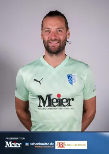
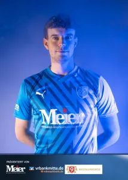
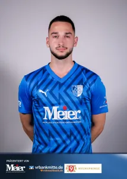
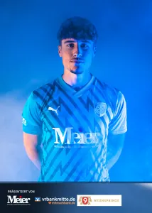

Tor
31Bennet Fröhlich

46Aleksandar StankovicAbwehr
4Pascal Köhler
5Dioum Aziz
8Leon Göbel
9Maximilian Lerch
15Nico Berger
33Artur Voilenko

39Elias GorgesMittelfeld

6Alexander Aschoff
7Jannik Jeschke10Ole Hoch
11Lucas Roth
14Jonas Grimm
16Leon Gümpel
19Vincent Michalek
20Paul Opfermann
21Fabio Dornieden
23Fabian Schnellhardt
24Robin Vogt
77Martin Fiedler
Angriff
3Maciej Wolanski
17Adrian Wilhelm
99Jagar Jargees Ali
Trainerstab
Alexander Ludwig
Michael Grimm
Johannes Huke
Veit Reißland
Betreuer
Yannick Stellmann
Dr. Dietmar Litzkow
Karin Kühlewind
Martin Mühlhaus
Mario Paulus
Gean G olez
Nächste Spiele
- 15:00So, 11.10.Kreisoberliga1. SC 1911 Heiligenstadt II:SG SV 1887 GernrodeHeimspielZum Spiel 1. SC 1911 Heiligenstadt II gegen SG SV 1887 Gernrode
- 14:30So, 18.10.KreisoberligaSG SC Leinefelde 1912 II:1. SC 1911 Heiligenstadt IIAuswärtsZum Spiel SG SC Leinefelde 1912 II gegen 1. SC 1911 Heiligenstadt II
- 15:00So, 25.10.Kreisoberliga1. SC 1911 Heiligenstadt II:SG TSV 1861 Bad TennstedtHeimspielZum Spiel 1. SC 1911 Heiligenstadt II gegen SG TSV 1861 Bad Tennstedt
- 14:00So, 01.11.KreisoberligaFC Union Mühlhausen II:1. SC 1911 Heiligenstadt IIAuswärtsZum Spiel FC Union Mühlhausen II gegen 1. SC 1911 Heiligenstadt II
- 13:30So, 08.11.KreisoberligaSG BSV BW Lengenfeld/St.:1. SC 1911 Heiligenstadt IIAuswärtsZum Spiel SG BSV BW Lengenfeld/St. gegen 1. SC 1911 Heiligenstadt II
- 16:30Sa, 21.11.Kreisoberliga1. SC 1911 Heiligenstadt II:1. FC Eichsfeld IIHeimspielZum Spiel 1. SC 1911 Heiligenstadt II gegen 1. FC Eichsfeld II
- 16:00Sa, 28.11.KreisoberligaSG SV Einheit Worbis:1. SC 1911 Heiligenstadt IIAuswärtsZum Spiel SG SV Einheit Worbis gegen 1. SC 1911 Heiligenstadt II
- 13:00So, 06.12.KreisoberligaSG VfB 26 Beberstedt:1. SC 1911 Heiligenstadt IIAuswärtsZum Spiel SG VfB 26 Beberstedt gegen 1. SC 1911 Heiligenstadt II
Tabelle und Kader auf fussball.deAlle Termine
Quelle: www.sc1911-heiligenstadt.de · Stand 06.10.2026